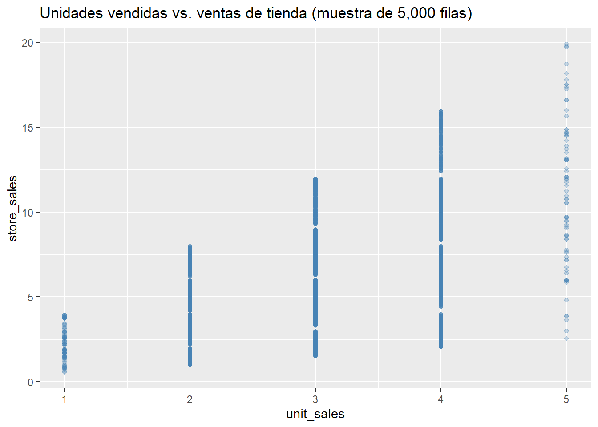

Capitulo 3 Correlación y regresión lineal simple
Este capítulo complementa las pruebas de hipótesis del Capítulo 2 con el análisis de la relación lineal entre dos variables numéricas continuas del mismo dataset de campañas de mercadeo: las unidades vendidas (unit_sales) y las ventas en dinero por tienda (store_sales). A diferencia de las pruebas anteriores (que comparaban medias o evaluaban independencia entre categorías), aquí se cuantifica el grado de asociación entre dos variables cuantitativas mediante el coeficiente de correlación de Pearson, y se ajusta un modelo de regresión lineal simple para describir esa relación.
3.2 Diagrama de dispersión
Con 360 mil filas, un scatterplot con todos los puntos es lento y poco legible, así que trabajamos con una muestra aleatoria solo para este gráfico.
set.seed(123)
data_muestra <- data %>% slice_sample(n = 5000)
ggplot(data_muestra, aes(x = `unit_sales(in millions)`,
y = `store_sales(in millions)`)) +
geom_point(alpha = 0.3, color = "steelblue") +
labs(title = "Unidades vendidas vs. ventas de tienda (muestra de 5,000 filas)",
x = "unit_sales", y = "store_sales")
Se observa una tendencia positiva entre unit_sales y store_sales: a medida que aumentan las unidades vendidas, las ventas en dinero por tienda también tienden a aumentar, aunque con bastante dispersión alrededor de esa tendencia.
3.3 Supuesto de normalidad
Con 360.336 observaciones, shapiro.test() no puede aplicarse directamente (límite de 5.000 datos), así que la normalidad se evalúa con Kolmogorov-Smirnov, igual que en el Capítulo 2.
## Warning in ks.test.default(scale(data$`unit_sales(in millions)`), "pnorm"):
## ties should not be present for the one-sample Kolmogorov-Smirnov test##
## Asymptotic one-sample Kolmogorov-Smirnov test
##
## data: scale(data$`unit_sales(in millions)`)
## D = 0.24457, p-value < 2.2e-16
## alternative hypothesis: two-sided## Warning in ks.test.default(scale(data$`store_sales(in millions)`), "pnorm"):
## ties should not be present for the one-sample Kolmogorov-Smirnov test##
## Asymptotic one-sample Kolmogorov-Smirnov test
##
## data: scale(data$`store_sales(in millions)`)
## D = 0.069532, p-value < 2.2e-16
## alternative hypothesis: two-sidedAmbas variables se alejan significativamente de la normalidad (p-valor < 2,2e-16 en los dos casos), tal como ha ocurrido con el resto de variables de este dataset. Esto no invalida el cálculo del coeficiente de Pearson, pero con un tamaño de muestra tan grande la prueba de significancia asociada es robusta por el Teorema Central del Límite.
3.4 Coeficiente de correlación de Pearson
x <- data$`unit_sales(in millions)`
y <- data$`store_sales(in millions)`
# Con la función cor()
cor(x, y, method = "pearson")## [1] 0.4813758##
## Pearson's product-moment correlation
##
## data: x and y
## t = 329.67, df = 360334, p-value < 2.2e-16
## alternative hypothesis: true correlation is not equal to 0
## 95 percent confidence interval:
## 0.4788633 0.4838803
## sample estimates:
## cor
## 0.4813758# Prueba de hipótesis paso a paso de la correlación de Pearson
n <- length(x)
gl <- n - 2
r <- cor(x, y, method = "pearson")
t_0 <- r * sqrt(n - 2) / sqrt(1 - r^2)
alpha <- 0.05
t_tab <- qt(1 - alpha / 2, df = gl)
p_valor <- 2 * pt(-abs(t_0), df = gl)
data.frame(r = r, t_0 = t_0, gl = gl, t_tab = t_tab, p_valor = p_valor)## r t_0 gl t_tab p_valor
## 1 0.4813758 329.6688 360334 1.959971 0Se obtuvo un coeficiente de correlación de Pearson r = 0,4814 (t = 329,67, gl = 360.334, p-valor < 2,2e-16), lo que indica una correlación positiva de magnitud moderada entre unit_sales y store_sales. Como |t_0| es mucho mayor que t_tab, se rechaza la hipótesis nula de correlación nula: existe una asociación lineal estadísticamente significativa entre ambas variables. A diferencia de otras pruebas de este trabajo, aquí la magnitud del coeficiente (r ≈ 0,48) también respalda que la relación es relevante en la práctica, y no solo estadísticamente significativa por el tamaño de muestra.
3.5 Regresión lineal simple
Dado que existe una correlación moderada y significativa, se ajusta un modelo de regresión lineal simple para cuantificar esa relación.
##
## Call:
## lm(formula = `store_sales(in millions)` ~ `unit_sales(in millions)`,
## data = data)
##
## Residuals:
## Min 1Q Median 3Q Max
## -9.4570 -1.9883 -0.2796 1.9417 13.8917
##
## Coefficients:
## Estimate Std. Error t value Pr(>|t|)
## (Intercept) 0.160279 0.019350 8.283 <2e-16 ***
## `unit_sales(in millions)` 2.029349 0.006156 329.669 <2e-16 ***
## ---
## Signif. codes: 0 '***' 0.001 '**' 0.01 '*' 0.05 '.' 0.1 ' ' 1
##
## Residual standard error: 2.899 on 360334 degrees of freedom
## Multiple R-squared: 0.2317, Adjusted R-squared: 0.2317
## F-statistic: 1.087e+05 on 1 and 360334 DF, p-value: < 2.2e-16El modelo ajustado es store_sales = 0,1603 + 2,0293 * unit_sales. El coeficiente de unit_sales es positivo y significativo (p-valor < 2e-16): por cada unidad adicional vendida, las ventas de tienda aumentan en promedio 2,0293 millones. El R² del modelo es 0,2317 (coincide con r² = 0,4814² ≈ 0,2317, como debe ser en regresión lineal simple), es decir, unit_sales explica aproximadamente el 23,2% de la variabilidad de store_sales. Aunque el ajuste no es muy alto (queda bastante variabilidad sin explicar por otros factores), es la relación más fuerte encontrada entre las variables numéricas continuas de este dataset, y confirma de forma más precisa lo que ya sugería el diagrama de dispersión y el coeficiente de correlación.